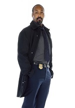
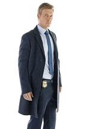
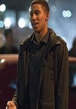

Personaggi
| Nome | Descrizione |
|---|---|
| Barry Allen | Protagonista principale. E' un giovane perito della scientifica, del dipartimento della polizia di Central City, che cerca in tutti i modi di trovare l'assassino di sua madre. Per vedere la descrizione completa clicca qui |
| Iris West | Iris West è la migliore amica di Barry, i due si conoscono da quando erano bambini e sono cresciuti insieme dopo che il padre di Iris si è fatto carico di Barry, in seguito alla morte della madre e all'arresto del padre. Per vedere la descrizione completa clicca qui |
| Cisco Ramon | Cisco Ramon è un ricercatore che lavora ai Laboratori S.T.A.R., lui e Caitlin diventano buoni amici di Barry, e lo aiutano nella lotta contro gli altri meta-umani che, usano i loro poteri per scopi malvagi.Per vedere la descrizione completa clicca qui |
| Caitlin Snow | Caitlin Snow è una ricercatrice che lavora nei Laboratori S.T.A.R., nonché amica di Barry, infatti aiuta Flash nella sua lotta contro gli altri meta-umani malvagi. Per vedere la descrizione completa clicca qui |
| Harrison Wells | Harrison Wells (Eobard Thawne), è un supervelocista proveniente dal futuro, si fa chiamare l'Anti-Flash. Per vedere la descrizione completa clicca qui |
| Detective joe West | Detective Joe West è il padre di Iris, è un detective del dipartimento di polizia di Central City. Per vedere la descrizione completa clicca qui |
| Eddie Thawne | Eddie Thawne è un detective del dipartimento di polizia di Central City, nonché partner di Joe. Per vedere la descrizione completa clicca qui |
| Wally West | Wally West, Figlio di Joe West e fratello di Iris. Per vedere la descrizione completa clicca qui |
Barry Allen
| Barry Allen, è un giovane perito della scientifica del dipartimento di polizia di Central City. Quando aveva undici anni sua madre venne uccisa da un uomo dotato di superpoteri(in seguito chiamato Antiflash da Barry e i suoi amici dei laboratori S.T.A.R.), e suo padre venne ingiustamente arrestato per l'omicidio. Barry, essendo a conoscenza della sua innocenza, decide di trovare il vero assassino, indagando su crimini che coinvolgono i meta-umani (i criminali con i superpoteri), per avvicinarsi alla verità. A causa di un malfunzionamento dell'acceleratore di particelle dei laboratori S.T.A.R., Barry viene colpito da un fulmine generato dall'acceleratore, che lo porta a uno stato comatoso durato quasi un anno. Al suo risveglio scopre di possedere un potere straordinario, acquisito grazie al fulmine, la super velocità. Con il nome di Flash decide di combattere gli altri meta-umani criminali. Quando scoprirà che l'assassino di sua madre è Eobard Thawne (nelle vesti di Harrison Wells), che rappresenta l'anti-Flash, avrà l'occasione di tornare indietro nel tempo con la supervelocità e salvare sua madre, ma deciderà di non farlo, lasciando le cose così come sono. Nel corso della seconda stagione il personaggio sarà invece decisamente meno attaccato alla figura della madre, che verrà difficilmente citata. Peraltro il suo amore per Iris diminuirà decisamente, portandolo a nutrire interesse verso Patty Spivot, aiutante di Joe. Barry è dotato di una super velocità che gli consente di correre talmente velocemente che le persone non lo vedono quando si muove inoltre può correre sulle pareti verticali e sull'acqua, oltretutto può, facendo vibrare le sue molecole ad una certa frequenza, attraversare le materie (muri, porte). Barry correndo a velocità sovvraumane riuscirà a viaggiare nel tempo; ma man mano che andrà avanti nel tempo la sua velocità crescerà e lui potrà tornare indietro di molte ore e successivamente anche di giorni. |
Iris West
| Iris West è la migliore amica di Barry, i due si conoscono da quando erano bambini e sono cresciuti insieme dopo che il padre di Iris si è fatto carico di Barry, in seguito alla morte della madre e all'arresto del padre. Barry è sempre stato innamorato di lei. Lavora come giornalista e inoltre è una grande sostenitrice di Flash, tanto da aprire un blog su di lui, inconsapevole che in realtà l'eroe è il suo amico. Sarà proprio il suo blog a permetterle di farsi assumere in un giornale locale. Desiderava diventare un poliziotto come suo padre, ma quest'ultimo le impedì di entrare all'accademia di polizia essendo sempre stato molto protettivo con lei. Iris afferma di considerare Barry solo un amico, ma in realtà è innamorata di lui. La ragazza inoltre intraprenderà una relazione con Eddie, ma poi egli si suicida per evitare che Eobard Thawne nasca (siccome suo discendente). |
Cisco Ramon
| Cisco Ramon è un ricercatore che lavora ai laboratori S.T.A.R., lui e Caitlin diventano buoni amici di Barry, e lo aiutano nella lotta contro gli altri meta-umani che usano i loro poteri per scopi malvagi. Ha l'abitudine di dare sempre degli pseudonimi ai supercriminali. Eobard ha affermato che pure Cisco, come Barry, si è trasformato in un meta-umano il giorno in cui l'acceleratore di particelle si azionò. Infatti grazie a i suoi superpoteri, aiuterà Barry in molte ocasioni, soprattutto quando Killer Frost (Caitlin), lo stava congelando. Triste per la morte del fratello, da la colpa a Barry, per aver cercato di salvare la madre, creando il Flashpoint, ma allo stesso tempo rovinando le vite dei suoi migliori amici. |
Caitlin Sonw
| Caitlin Snow è una ricercatrice che lavora ai laboratori S.T.A.R., nonché amica di Barry, infatti aiuta Flash nella sua lotta contro gli altri meta-umani malvagi. Lei credeva che il suo fidanzato, Ronnie Raymond, fosse morto durante l'incidente dell'acceleratore di particelle, per poi scoprire che è ancora vivo ma, trasformatosi nel meta-umano Firestorm. Caitlin e Ronnie si sposano ma subito dopo lui muore per salvare Central City. Nella seconda stagione, durante un viaggio dimensionale a Terra-2, i ragazzi incontreranno la versione alternativa di Caitlin, Killer Frost, e il suo fidanzato Ronnie, Deathstorm, entrambi verranno uccisi da Hunter Zolomon (nominato da essi Zoom). Nella terza stagione Caitlin, in seguito al Flashpoint (un'altra linea temporale creata da Flash per salvare nuovamente la madre), si trasforma in Killer Frost; dopo essere stata aiutata dai suoi amici a controllare il suo super potere (quello di congelare le cose), aiuta il team a catturare Alchemy,(un super criminale, il quale chiama le persone che nel Flashpoint hanno avuto i poteri, glieli ridà e così crea altri meta-umani criminali), il quale aveva convinto a Wally che poteva essere anche lui Flash (essendo esso nel Flashpoint), così anche Wally acquista il potere della supervelocità e, aiuta Barry a sconfiggere i meta-umani malvagi. |
Harrison Wells
| Harrison Wells (Eobard Thawne), è un supervelocista proveniente dal futuro, si fa chiamare l'Anti-Flash. È stato lui, viaggiando indietro nel tempo, a uccidere la madre di Barry, anche se in realtà voleva uccidere lo stesso Allen. Non potendo più usare i suoi poteri, non può più ritornare nel suo tempo. Dopo aver ucciso il vero dottor Harrison Wells e sua moglie causando un incidente stradale, assume la sua identità e le sue sembianze diventando il capo dei laboratori S.T.A.R.. Sviluppa l'acceleratore di particelle, sapendo subito che non avrebbe funzionato, con l'obiettivo di dare i poteri a Barry in anticipo e servirsene per tornare nel suo tempo. Il suicidio del suo antenato Eddie cambia la linea temporale ed Eobard smette di esistere. Nella seconda stagione dopo l'apertura del varco temporale arriva la versione di Terra-2 del dottor Wells che come il dottor Wells di terra 1, ha creato il Flash di Terra-2, ma anche il suo acerrimo nemico Zoom. Tornerà anche una versione alternativa dell'Anti-Flash di un altro tempo. Nella terza stagione l'Harrison Wells di terra 2 torna a terra 1 perchè la figlia, Jesse Wells, sta avendo gli stessi sintomi che ha avuto Barry quando è stato colpito dall'esposione dell'accelleratore, e Harrison vuole che Caitlin le faccia tutti gli esami possibili che può fare per vedere se Jesse è i grado o meno di sopportare la supervelocità come Barry; ma è anche un pò scontroso perchè non vuole che la figlia sia come Barry, ma alla fine lo accetta e le dice di aiutare Barry, fino a quando non sarà giunto il momento di tornare su terra 2. Successivamente Cisco e Caitlin inviano un algoritmo a tutti gli Harrison Wells, per vedere chi tra tutti quelli è in grado di aiutarli a sconfiggere i meta-umani; infine scelgono l'Harrison di terra 19, che alla fine si scopre che non è stato lui a risolvere l'algoritmo ma bensì il suo patner, e infatti sono un pò distaccati dall'idea di accettare i suoi consigli e fargli fare le cose. |
Joe West
|  | Detective Joe West è il padre di Iris, è un detective del dipartimento di polizia di Central City. Si è preso cura di Barry fin da quando era un bambino. Inizialmente pure lui credeva che suo padre fosse l'assassino di Nora, ma quando vede gli straordinari poteri di Barry, capisce che Henry è innocente. Come detective aiuta sempre Barry, coprendo le sue tracce, e gli vuole bene come se fosse suo figlio. Dopo anni e anni Iris scopre che il padre le aveva detto una bugia nei confronti della madre, ed essa la incontra in un bar, e mentre parlano Iris capisce che la madre è malata di cancro, e un giorno in ospedale incontra il fratello Wally, da quel momento in poi Iris, Wally e Joe stanno insieme come una vera famiglia. |
Eddie Thawne
|  | Eddie Thawne è un detective del dipartimento di polizia di Central City, nonché partner di Joe. Lui e Iris intraprendono una relazione. Nonostante l'amore che c'è tra i due, Eddie spesso è incerto sulla loro relazione, essendo molto geloso di Barry, conscio che quest'ultimo e Iris provano dei sentimenti che vanno oltre l'amicizia, infatti i due si lasceranno proprio a causa dell'amore che Iris prova per il supereroe. Pure lui verrà a conoscenza del segreto di Barry, e deciderà di aiutarlo nella sua lotta contro i meta-umani. Eobard ha affermato che Eddie è un suo lontano antenato, dunque il detective per fermare il criminale, decide di togliersi la vita impedendo alla sua discendenza di proseguire, in questo modo Eobard smette di esistere dal cambiamento della linea temporale. |
Wally West
|  | Wally West, Figlio di Joe West e fratello di Iris. Nella prima stagione Wally, è un corridore di macchine e Joe, il padre, cerca di convincerlo a non fare più gare clandestine. In seguito al Flashpoint Wally, grazie ad Alchemy, acquisisce il potere della supervelocità, e si fa chiamare Kid Flash, e aiuta Barry a sconfiggere gli altri meta-umani. |